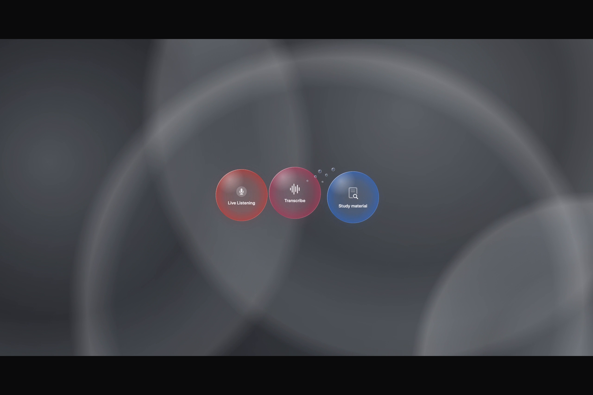
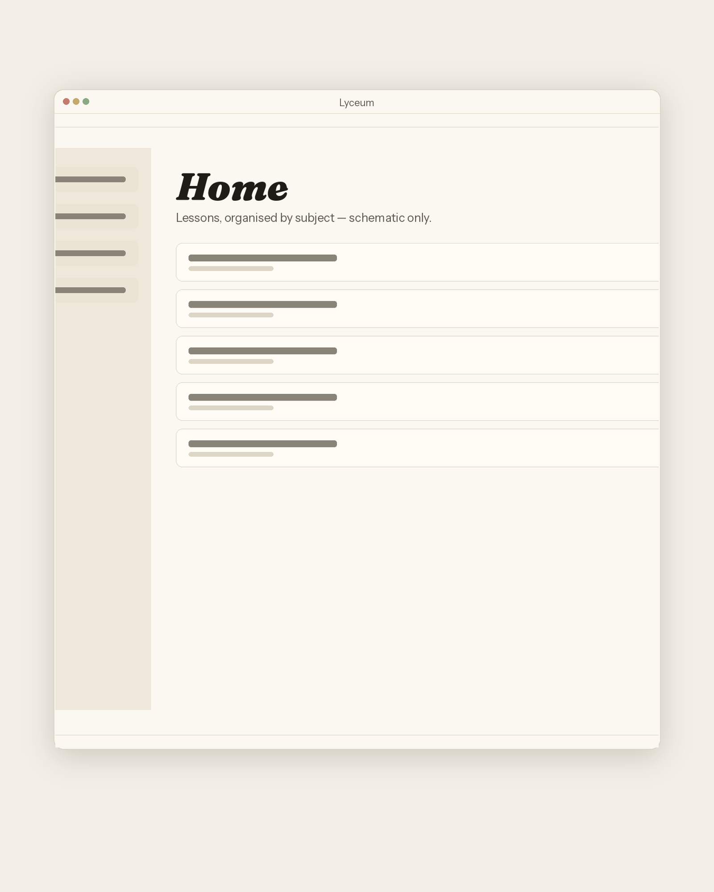
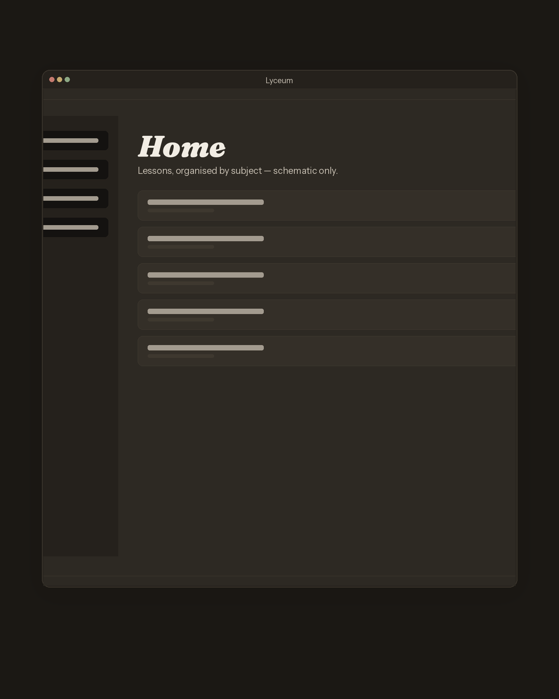
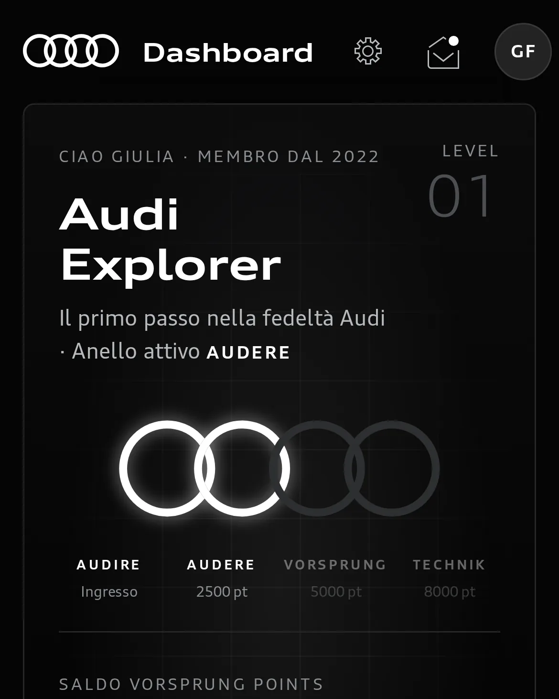

Selected work
Antonio Rosati
MSc student in AI for Business Transformation. I build working AI-enabled software — beginning with Lyceum, a native macOS app for lectures and meetings.


Selected work
Work
Two things I have been building. The pointers that wander behind the type are only a picture — agents passing quietly through the work.
-


Lyceum
A native macOS app that turns lecture and meeting audio into editable study documents. January 2026–present, sole author.
-

Audi Vorsprung Club
A myAudi loyalty prototype for H-ACK Audi, October 2026: five levels, four rings, a hidden Pioneer tier. The code was generated in full by AI from a prompt I wrote.